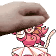

Hello, it's my own site! Welcome!
About my deltarune (and Undertale) hyperfixation
First of all let's talk about why it's on my site:
1. Peakest games of eternity
2. OST
3. Pink (pls be my wife)
4. Freedom motif
I feel rlly wonderful when i think and talk about deltarune & undertale, those are the games that i want to play every day, i spent my childhood with these games and it was the best chapter of my whole life, now i'm playing deltarune about 3 times a week, usually to no-hit bosses, but i rlly want to replay it. My feelings about the different chapters vary, but they're only positive emotions, every chapter of this game is different, and i rlly like that. For example, chapter 5 is lightless and blissful for me, but chapter 4 is giving me straight opposite, at times it fills me with anxiety and makes me shiver, at other times it brings a sense of peace (i feel safe when Gerson is nearby)
i really love deltarune so the site crackles with [Freedom]
